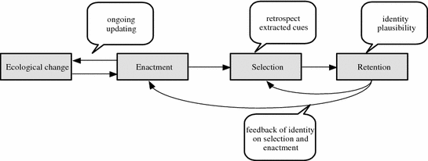

Chapter 8 Sensemaking
Sensemaking is “how organizational members come to understand and move forward when faced with unexpected or unanticipated information” (Dougherty, 2020)
- It can help stabilize the organization in time of crisis.
The difference between sensemaking theory and Uncertainty Management Theory: they are close ties.
| Uncertainty management Theory | Sensemaking Theory |
|---|---|
| based on individual level | group dynamics and group behavior |
| management in relationship uncertainty | manage in the organizational context |

(picture from (Lu 2017))
Example in business: (Kury 2014)
Culture of sexual harassment (i.e., Some cultures are more prone to sexual harassment than others).
From the perspective of sensemaking theory, organizational members make sense of unexpected events through a process of action, selection and interpretation (K. E. Weick 1995).
Organizational culture is created not through shared meaning, but shared experiences through processes sensemaking. We might never come to a consensus, but the process of sensemaking can help us have shared experiences.
Properties of sensemaking:
- Identity: created through the interaction with other organizational members.
- Retrospective: make sense only looking backward.
- Ongoing: relate past, present, and future to make sense of an event.
- Enactment: actors are part of the culture.
- Extracted cues: focus their attention to parts of the environment.
- Social: based on either interaction with others, or expected interaction with others.
- Plausibility: seems reasonable.
Hence, sensemaking influence
- the acceptance of sexual harassment in an organization
- responses by nonharassed members.
Sensemaking’s phases:
- Discovery
- Debriefing (e.g., humor, ridicule in case of sexual harassment)
- Dispersal (e.g., return to normalcy)
men and women make of sexual harassment differently (i.e., women label more behavior as sexual harassment than men)
Practical Applications
- Applying Humor: humor can help members involve actively in sharing sexual harassment training, sense of community. But too much can also belittle victim’s experience.
- White men and sexual harassment: should to vilify, but assume that they want to help.
- Identifying Sexual harassment: should not focus on shared meaning, but shared experience.
- Responding to sexual harassment: no one-size-fit-all approach, but respect contexts of the sexual harassment.
First-generation immigrants are prone to microaggressions.
microaggressions are “brief and commonplace daily verbal, behavioral, or environmental indignities, whether intentional or unintentional, that communicate hostile, derogatory, or negative racial slights and insults.” (Sue et al. 2007)
Microagresssion exists in 3 forms:
- Verbal: Sarcasm
- Attitudinal: Stereotypes (e.g., not fit into stereotypes, or fit into stereotypes which dismisses individual
achievement)
- Professional: Skepticism (e.g., microinvalidations when immigrant professionals’ credentials and qualifications are challenged )
Sensemaking model by (K. E. Weick 1995) explains how one can retrospectively make sense of past events and respond to future events. CSM helps make sense of immigrant professional’s experiences through the lenses of power (e.g., dominant-nondominant interactions).
To counter, immigrant professionals
create another selves
- muting/creating dual selves
- giving in
- giving up/ dissociating self
rationalizes
- perspective-taking
- blaming ignorance
- dismissing
- using humor
takes ownership
- normalizing
- appreciating cultural differences
- adapting to disparate expectation
Communication among stakeholders in high reliability organizations (HROs)
organizational discourse: how members make sense of the tragedy by sharing.
critical team in high-hazard organization needs effective communication processes.
HROs are “systems that successfully operate in environments that could produce catastrophic errors.”
3 broad themes from the grounded theory approach appear:
Emotion
- Some take time off to process the news.
- Some get back to work to cope with the events.
Sensemaking (why)
Debriefing process to understand what happened and learn from what happened.
Purpose of sensemaking:
- How could this have happened? This could happen to any other team. The fatal team was “unlucky.”
- Why has this not happened to our team?
Learning (What now?)
- Individual as well as organization(structural changes) can learn
Making changes after a tragedy in the eyes of the crew was a routine event that officials make whenever a tragedy happens regardless.
Staying away from blame
Then the question is if you did find a person’s fault led to the deaths of 19 people, we can you communicate that
knowledge to facilitate learning. Moreover, the attitude of the firefighters were reluctant to changes and went back to
the basics, maybe because of this blameless culture.Hence, people might blame luck in this situation. Interestingly,
this blameless culture also facilitate group cohesion in the HROs.
A reconciliation is to recognize hindsight bias when trying to sensemaking/learning and avoid blaming.
Athletes do not report concussion readily. They often conceal it due to cultural discourses and norms.
Cultural narratives
Based on (Polkinghorne 1995) two-level conceptualization of narrative: actors use narrative to create social reality and to make sense of their experiences.
Sport narrative and sensemaking:
Sensemaking is the basis for social action.
- Sensemaking is where meanings materialize to create identity.
Cultural narratives help actors sensemaking by giving them a framework to understand an event.
Method: Abductive approach
Text Arichival Data: identify protagonist, actors, storyline, story values, and morals for each story. Then, identify
sport story archetypes
Interview [Data:\\](Data:){.uri} using constant comparative analysis to see how stakeholder made sense of a concussion even and reporting behavior, then compare to the types identified in the text archival data.
Findings:
5 narratives identified:
- Play-Through-Pain: enduring pain for the benefits of the team.
- Big Leagues: American Dream of becoming a professional athlete through hard work and perseverance.
- Commodification: abstract objects with financial value
- Masculine Warrior: protagonist defeats an opponent through strength, toughness, bravery, violence, and perseverance
- Need-for-Safety: Contemporary culture where “athletes that seek healthcare are framed as moral and intelligent.”
Stakeholders refer to these 5 narratives to make sense of reporting behaviors.
Sensemaking use cultural sport narrative
- to extract cues: whether you have a concussion or not
- construct identity: positive defense mechanism (4 over 5 narratives).